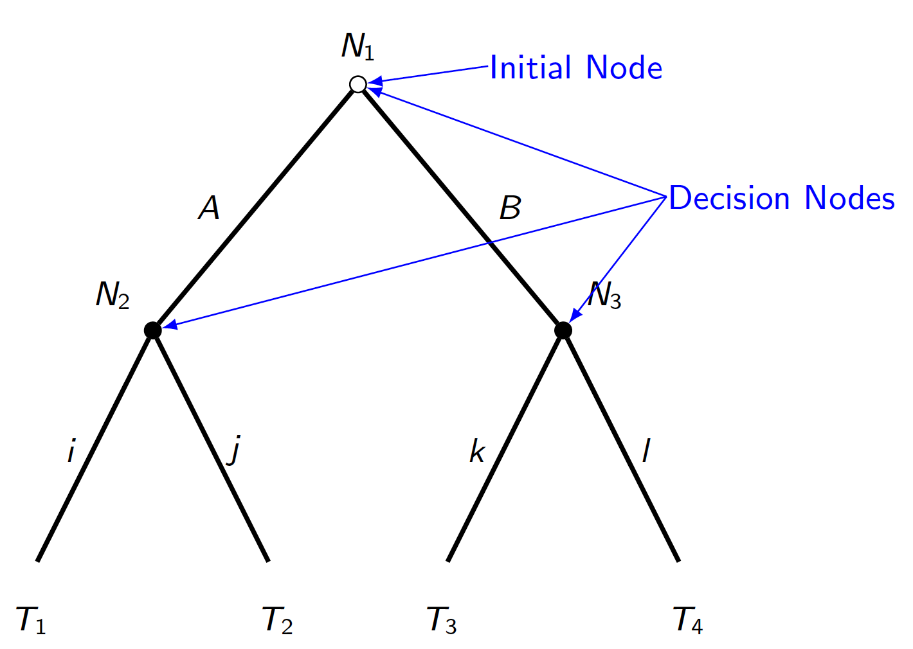
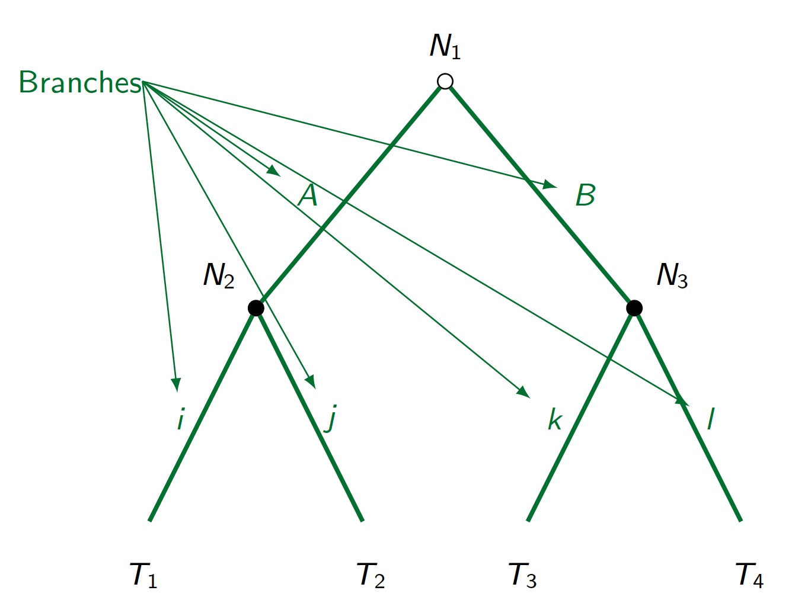
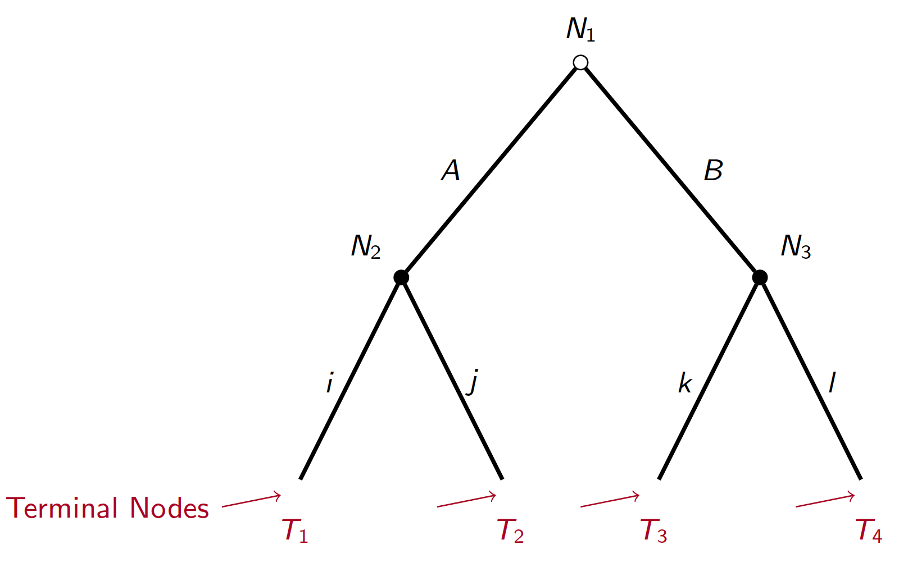
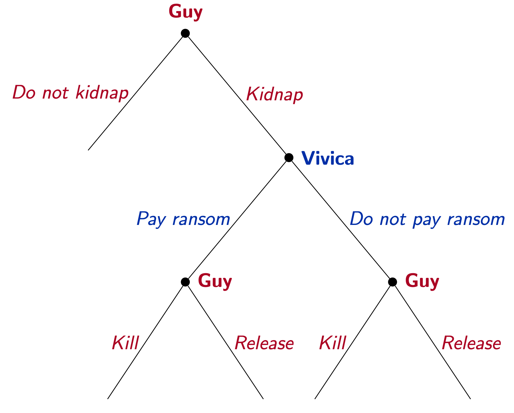
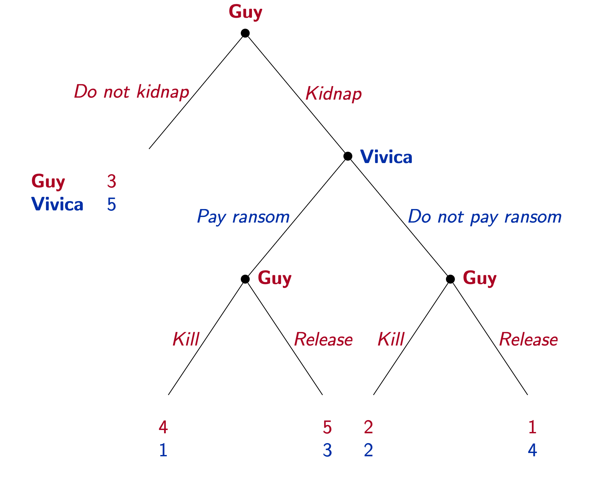
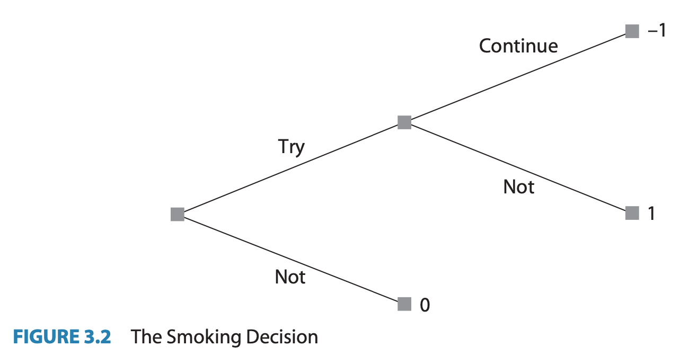
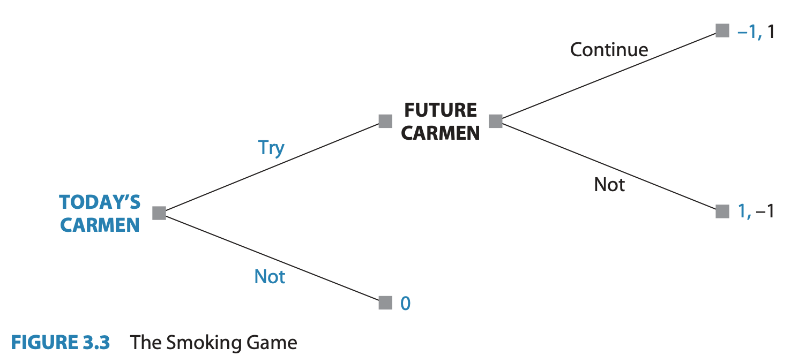
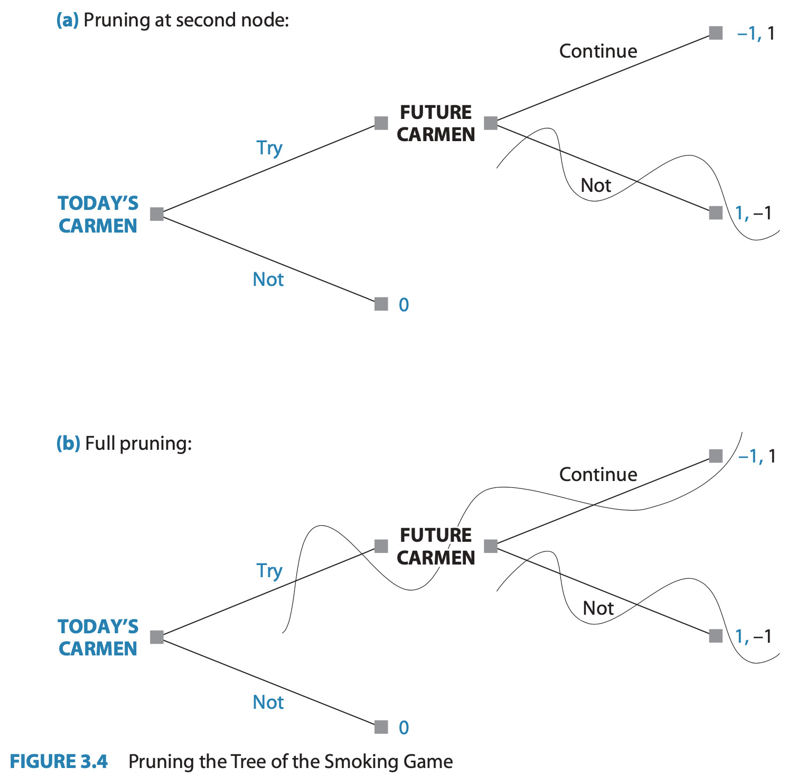
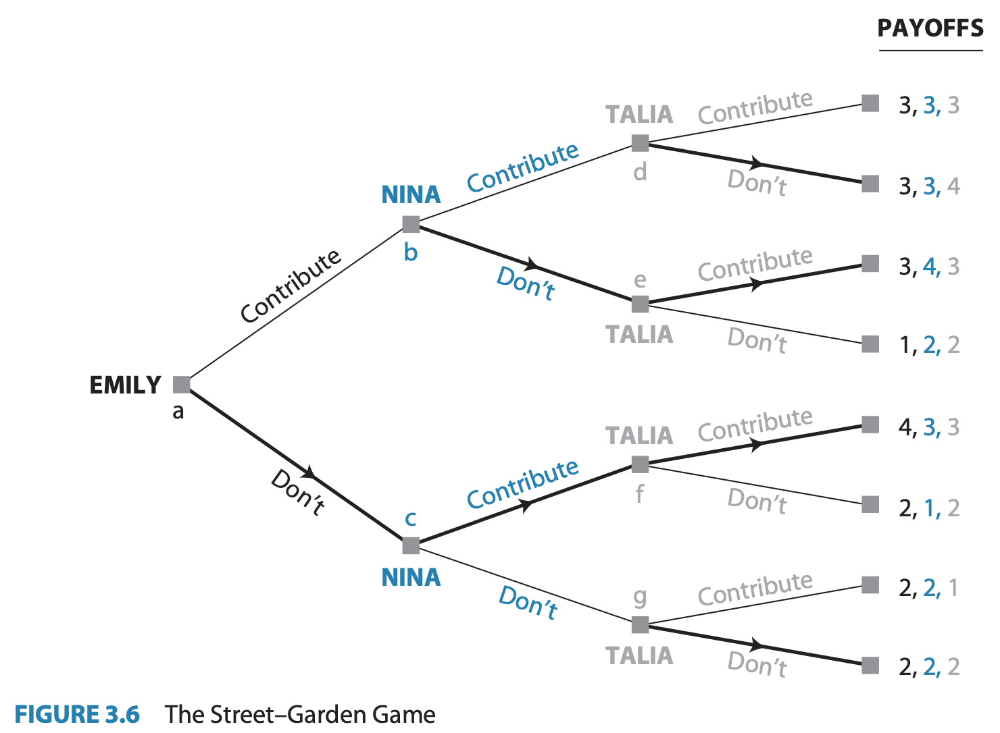
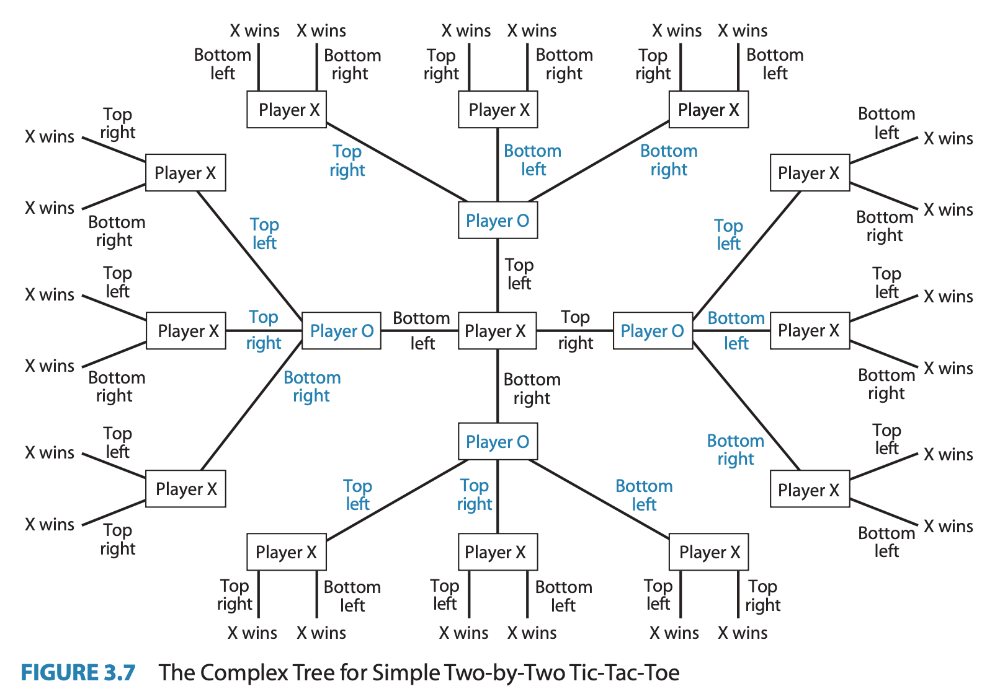

Introduction to Game Theory
Sequential Games
2024
Outline
Game trees
Backwards Induction
Evidence
Examples
Extensive Form
Game Trees/Extensive Form as a tool
Before we learn how to solve a game, it will helpful to be able to visualize them
Because of the ordered nature of sequential games, a tree diagram makes sense
A Decision Tree

Figure 1
Extensive Form Definition
A Tree Graph consists of:
Multiple nodes with an ordered hierarchy starting from one initial node
Branches coming from each node which connect it to later nodes
The tree ends in any of the multiple terminal nodes
Warning
Each (non-initial) terminal node may have multiple branches leading from it; but must only have one branch that leads to it.
Anatomy of a tree
Anatomy of a tree
Anatomy of a tree
Kidnapping Game 1
A kidnapper named Guy has contacted the victim’s wife, named Vivica, to demand a ransom.
To predict what will happen to the victim, Orlando, we need to create a game theoretic model of the situation.
Let’s use the language of the tree graph to visualize this game.
- Draw game on chalkboard step-by-step so students see how it’s constructed
- Explain order of each action for each node, starting w/ inital choice to kidnap or not
Kidnapping Game
Applying the Extensive Form
Who are the players?
Where are the decisions?
What are the branches? What do they represent?
What do the terminal nodes represent?
Is this a complete representation of a game? What’s missing?
Kidnapping Game payoffs
| Outcome | Guy | Vivica |
|---|---|---|
| No kidnapping | 3 | 5 |
| Kidnapping, ransom paid, Orlando killed | 4 | 1 |
| Kidnapping, ransom paid, Orlando released | 5 | 3 |
| Kidnapping, no ransom paid, Orlando killed | 2 | 2 |
| Kidnapping, no ransom paid, Orlando released | 1 | 4 |
Kidnapping game tree with payoffs
Predictions?
Based on the extensive form game tree with payoffs, do you have any predictions for what strategies each player will choose?
a Definition of an Extensive Form Game: 1
A collection of decision-makers, called players or agents
A set of decision nodes, each of which represents the information available to the player of that node
Branches from each node which represent the possible actions available to the players
The entire game tree serves as the mapping from intersections of players’ strategy profiles to the outcomes at each terminal nodes
Strategies in Extensive Form Games
Definition
A strategy is a complete plan of action for every eventuality
Warning
Be careful to distinguish between a strategy and a single action/choice
What’s the difference?
Apply this definition to the kidnapping game:
- How many choices does Guy make?
3
- Vivica?
1
- Write out a strategy list for each player:
Write out a strategy for each player
Guy:
{Kidnap, Kill if ransom paid, Don’t Kill if no ransom paid} is one strategy
Guy has \(8\) total strategies:
{Kidnap, Kill, Kill}, {Kidnap, Kill, Don’t}, {Kidnap, Don’t, Kill}, {Kidnap, Don’t, Don’t}, {No Kidnap, Kill, Kill}, {No Kidnap, Kill, Don’t}, {No Kidnap, Kill, Kill}, {Kidnap, Don’t, Kill}
Vivica:
- Only two strategies: {Pay the ransom}, or {Don’t pay}
Letting Nature take the wheel
One way to represent risk or uncertainty is to represent Nature as a ‘player’.

figures/doubleornothing.png
Backwards Induction
The smoking decision
figures/fig3.2.png
The smoking game
figures/fig3.3.png
‘Pruning’ branches
figures/fig3.4.png
figures/fig3.5.png
Backwards Induction defined
The method of looking at decisions in the future to decide what to do now is called Backwards Induction or Rollback
Definition 1
When all players do rollback analysis to choose their optimal strategies, we call this set of strategies the rollback equilibrium2 of the game; the outcome that arises from playing these strategies is the rollback equilibrium outcome
Group Exercise:
Consider the Flag game but instead of starting with 21 flags the game starts with 5 flags, and instead of being able to pick 1,2, or 3 flags teams can only pick 1 or 2 flags.
Draw the extensive form game tree complete with all payoff for both teams.
How many total strategies are there for team 1?
Use pruning to eliminate actions to get to a rollback equilibrium. Who will win? What is the winning strategy?
Adding more players
We can start to add more complexity with more than two players
3-player planting game
Emily, Nina, and Talia are roommates who want to get a start on their communal garden.
They like to enjoy the benefits of fresh produce and green space, but it is costly for them to put the work in.
2 or 3 people working is enough to keep the garden healthy, but if 1 or 0 work, then the garden will die.
Planting Game payoffs
| outcome: | utlity: |
|---|---|
| I don’t contribute, but garden lives | 4 |
| I contribute, and get garden. | 3 |
| I don’t contribute, and garden dies | 2 |
| I contribute, but garden dies | 1 |
Planding Game Tree
figures/fig3.6.png
Equilibrium Path of Play
Note that there is one continuous path we traced from the initial node to a final equilibrium outcome.
However, we couldn’t have gotten their without the other arrows paths even though they are never reached in equilibrium.
Recall that a strategy is a collection of choices at every decision node.
Equilibrium Strategies
Even though the players available actions are all called the same (Contribute or Don’t), this tree provides labels of each decision node so we can say something like:
“Nina’s strategy in the rollback equilibrium is { Don’t Contribute at b, Contribute at c }”.
- To make it even shorter, let’s call this strategy DC.
How many strategies does Talia have?
CCCC, CCCD, CCDC, CCDD, CDCC, CDCD, CDDC, CDDD, DCCC, DCCD, DCDC, DCDD, DDCC, DDCD, DDDC, DDDD
16 total strategies
Rollback Equilibrium Strategies
The equilibrium is:
- { D1, DC2, DCCD3 }
Adding More Moves
Even a simple game get complicated fast

Tic-Tac-Toe
Even though it looks complicated, the main branches are really just copies of each other
Most people probably figure out the rollback equilibrium after playing it enough
Insert relevant xkcd here: https://xkcd.com/832/
Chess
What about more complicated games like chess?
- technically rollback solvable, but with \(10^{120}\) possible moves, it hasn’t been solved by either human or machine
Players of complicated sequential games often implement some intermediate valuation function to assign payoffs to non-terminal nodes.
Welfare and Efficiency
What are the good outcomes in the planting game?
Can we rank outcomes by collective welfare?
Pareto Dominance
Pareto optimality (or efficiency) is econonomists’ best shot at coming up with a ranking of which outcomes are objectively ‘better’
For any two outcomes (🎉, 🎊), 🎉 is Pareto dominated by 🎊 if both:
No one strictly prefers 🎉 to 🎊 - U👤(🎊) \(\geq\) U👤(🎉) \(\forall 👤 \in \{ 🙍, 🧑, 💆, 🧖, 🧑, 😺, ...\}\)
At least one person strictly🎉 prefers 🎉 to 🎊 - \(\exists 👤\) such that U👤(🎊) \(>\) U👤(🎉)
Pareto Improvement
The move from a policy y to an alternative policy x is a Pareto improvement if x Pareto dominates y.
Such a policy change should reasonably be seen as unambiguously good
Another perspective is that no-one would veto a pareto improvement
Pareto Efficiency
An outcome is Pareto Efficient (Optimal) if no other outcome Pareto dominates it.
An outcome is Pareto Infficient if at least one other outcome Pareto dominates it.
Ranking the Planting Payoffs
Compare (4,3,3) to (1,2,2)
- Which one is Pareto dominating?
Ranking the Planting Payoffs
Now compare (4,3,3) to (3,4,3) or (3,3,4)
- Which one is Pareto dominating?
Is the rollback equilibrium outcome a Pareto efficient one?
Discussion: Efficiency vs other social comparisons
How useful is Pareto Efficiency in the real world?
How else could we group outcomes?
We might address this later in the class with what is known as Cooperative Game Theory

EC327 | Lecture 2 | Sequential Games